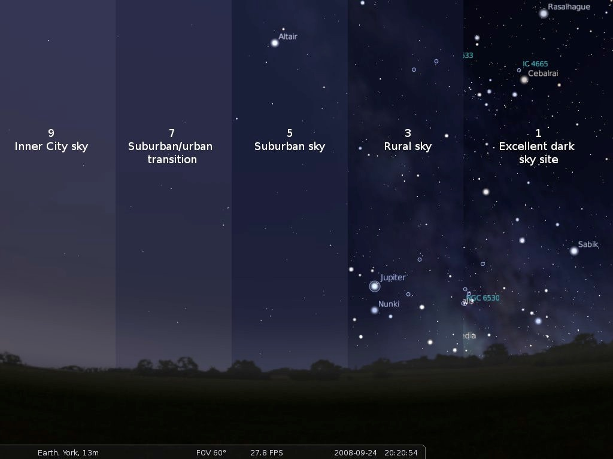

<!DOCTYPE html>
<html lang="en">
    <head>
        <meta charset="UTF-8">
        <meta name="viewport" content ="width=device-width, initial-scale=1.0">
        <title>Document</title>
        <style type="text/css">
        body {
            font-family: "Times new roman", serif;
            background-color: rgb(203, 228, 224);
            font-size: 1.5em;
        }
        .center {
            display: block;
            margin-left: auto;
            margin-right: auto;
            width: 50%;
        }
        .center_text {
            margin: auto;
            width: 50%;
            padding: 10px;
        }
        .red_border {
            border-left: 1px dotted rgb(46, 48, 187);
        }
        </style>
    </head>
</html>
<body> 
    <h1 class="center_text" style="text-align: center;"> Electricity Infrastructure and Light Pollution</h1>
     <br>
    <p class="center_text red_border" style="font-size: 18px;">
        The images above and below represent the light pollution in the United States seen via satellite sensors and imaging. The two maps represent the same light pollution in different ways.
    </p> <br>
     <br>
    <p class="center_text blue_border" style="font-size: 18px;">
        Light Pollution Map: <br> https://www.arcgis.com/apps/instant/atlas/index.html?appid=0cd1cdee853c413a84bfe4b9a6931f0d&webmap=b296947d717643e5805378a5c3f5e6eb <br>
    </p> <br>
     <br>
    <div class="center_text">
        <h5> Light Pollution Map</h5>
        <p>The light pollution maps help readers see how much of North America is impacted by light pollution. According to the National Park Service, more than 99% of Americans are affected by light pollution. These light pollution maps show how light pollution has the highest amount of lighting in populated states such as New York, Illinois, and Washington, D.C. </p>
        <h5>Light Pollution and Light Infrastructure</h5>
        <p>Light pollution occurs most commonly in dense, urban populations. Light pollution affects humans, fish, insects, birds, and other animals. Humans are unable to view the night sky clearly. Migratory fish and birds are unable to migrate properly. 
            For example, certain insects like moths and flies are attracted to light; they will stay near the light source until they die of exhaustion. Light pollution also affects the circadian rhythms of animals; bees are one example of an animal that requires rest at night and needs to be constantly active during the day. Furthermore, the problem of light pollution will only get worse. The electricity infrastructure is going to play a larger role in light pollution as the years increase. According to the U.S. Energy Information Administration, electricity consumption will increase by 1.7% per year. 120 terawatt-hours of energy are used in the United States per year for outdoor lighting and street lights.
        </p>
    </div>

    <h1 style="font-size: 28px;">References</h1>
    <p style="font-size: 21px;">Holker, Franz, Christian Wolter, Elizabeth Perkin, and Klement Tockner. “Light Pollution as a Biodiversity Threat: Trends in Ecology & Evolution.” Light pollution as a biodiversity threat. Accessed June 4, 2025. https://www.cell.com/trends/ecology-evolution/fulltext/S0169-5347(10)00221-1. </p>
    <p style="font-size: 21px;">Schipper, Mark, and Tyler Hodge. “After More than a Decade of Little Change, U.S. Electricity Consumption Is Rising Again - U.S. Energy Information Administration (EIA).” After more than a decade of little change, U.S. electricity consumption is rising again - U.S. Energy Information Administration (EIA). Accessed June 4, 2025. https://www.eia.gov/todayinenergy/detail.php?id=65264. </p>
    <p style="font-size: 21px;">Narisada, Kohei, and Duco Schreuder. “Light Pollution and Astronomy.” SpringerLink, January 1, 1970. https://link.springer.com/chapter/10.1007/978-1-4020-2666-9_5. </p>
    <p style="font-size: 21px;"> https://www.lightpollutionmap.info/#google_vignette </p>
    <script>

    </script>
</body>
